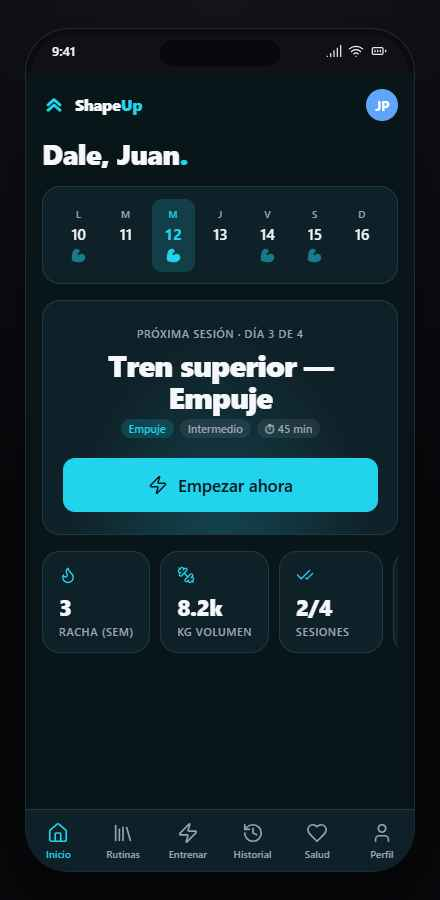
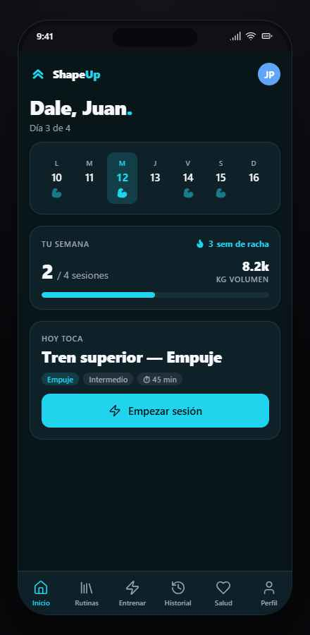
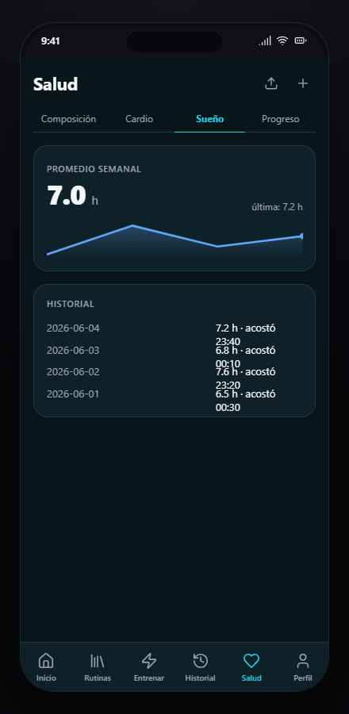
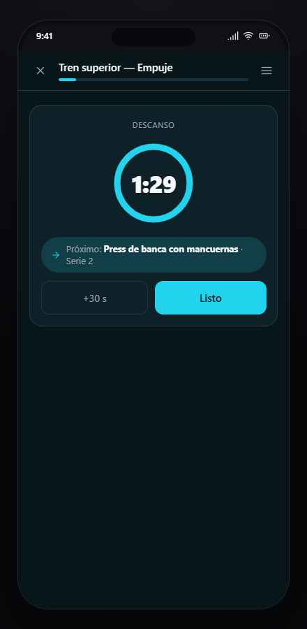

ShapeUp · Auditoría rápida · 10 jun 2026
Top 10 hallazgos — UI kit + foundations
Foco: pulido visual, animaciones y claridad de los datos traducidos e insertados. Contrastado contra jpcofano/shapeup@main. Ordenado por impacto en el usuario. Marcá los que querés incorporar al mapeo — abajo queda el resumen de la selección.
| # | Hallazgo | Severidad | Dónde |
|---|---|---|---|
| H1 | Catálogo bilingüe sin señalizar — 758/873 ejercicios (87%) caen a inglés en silencio | Alta | repo |
| H2 | Home Stadium y Clásico ignoran el programa activo (y el prompt 39 dice «copiá del kit») | Alta | kit → repo |
| H3 | Fechas crudas e inconsistentes (ISO, DD/MM/YYYY y fmt() conviven) | Media | kit + repo |
| H4 | Sueño: historial desalineado y copy «acostó 23:40» | Media | kit |
| H5 | Descanso: media pantalla vacía y timer sin el token --fs-timer | Pulido | kit |
| H6 | Historial: el badge RPE salta de posición entre tarjetas | Pulido | kit |
| H7 | Cardio: barra de zonas sin minutos — proporción sin dato | Pulido | kit |
| H8 | Cambio de tab/pantalla con corte seco (sin transición) | Anim. | kit + repo |
| H9 | Momentos clave sin micro-feedback (serie hecha, últimos 5 s, fin de sesión) | Anim. | kit + repo |
| H10 | Entrada animada (stagger) solo en Aurora | Anim. | kit + repo |
Catálogo bilingüe sin señalizar — la claridad de los datos traducidos
El diccionario traducciones-fedb.es.json cubre 115 de 873 ejercicios (~13%). El importador marca cada uno con traduccion: "ok" | "pendiente", pero Catalogo.tsx no usa ese campo: los 758 pendientes muestran nombre e instrucciones en inglés mezclados con la UI en castellano, sin aviso, sin filtro y sin orden. Por eso «la forma en inglés se ve más completa»: el fallback es silencioso. Los 115 traducidos son además los únicos con puntos clave, errores comunes, patrón y sinónimos cargados.
Propuesta (combinables)
- a) Badge «EN» discreto en la tarjeta cuando
traduccion === "pendiente". - b) Orden: traducidos primero, con el mismo filtro aplicado.
- c) Toggle «Solo en castellano» en la fila de filtros.
- d) Búsqueda que matchee sinónimos ES + nombre EN (el campo
sinonimosya existe). - e) Plan de contenido: completar la traducción por lotes, priorizando los ejercicios usados en rutinas y programas activos.
Destino sugerido
Prompt nuevo 40 — «Catálogo bilingüe claro» + fila en MAPEO-ADDENDUM §A.
Home Stadium y Clásico ignoran el programa activo
En screens-home.jsx solo Aurora resuelve el día con sesionDeHoy(progActivo). Stadium y Clásico leen el mock legacy PROGRAMA: con el programa activo en día de descanso, Aurora y Entrenar dicen «Día de descanso» pero Stadium/Clásico dicen «HOY TOCA Tren superior — Empuje», y la WeekStrip marca los días de otro programa. También sobrevive el subtítulo legacy «Día 3 de 4». El prompt 39 instruye «copiá de screens-home.jsx» → el bug viaja a producción tal cual.



Propuesta
- Fix en el kit: los 3 layouts derivan de
sesionDeHoy+ programa activo; WeekStrip del programa activo; eliminar «Día 3 de 4». - Una línea en el prompt 39: «los tres layouts resuelven el día con
sesionDeHoyy el programa activo del miembro».
Destino sugerido
Fix en kit antes de ejecutar 39 + línea en 39-d13. Es el más urgente por timing.
Fechas crudas e inconsistentes
Conviven tres formatos a la vista: ISO crudo 2026-06-02 (Sueño, Cardio, tabla de mediciones), 03/06/2026 (Historial) y un fmt() propio en records. Para una app familiar, «2026-06-02» no es lenguaje humano — es exactamente la falta de claridad de datos insertados que querías cazar.
Propuesta
- Un único helper
fmtFecha()→ «mié 4 jun» (año solo si ≠ actual), aplicado en todas las pantallas del kit y mismo criterio enlib/del repo.
Sueño: historial desalineado + copy
Cada fila es un space-between con un solo span a la derecha: «7.2 h · acostó 23:40» envuelve en dos líneas desparejas y ninguna columna queda alineada. Además «acostó» suena raro en voseo.

Propuesta
- Grid de 3 columnas: fecha · horas (
tabular-nums, alineadas) · «se acostó 23:40». Una línea por registro.
Descanso: composición vertical y jerarquía del timer
La tarjeta queda pegada arriba con ~55% de la pantalla vacía; el número usa 34px cuando el token de identidad --fs-timer: 52px (clase .t-num) existe exactamente para el cronómetro; el chip «Próximo: … · Serie 2» envuelve sin intención.

Propuesta
- Centrar el bloque verticalmente, timer en
t-num(52px), «Próximo» como label + valor en dos líneas intencionales. El estado urgente <5 s ya está ✓.
Historial: el badge RPE salta de posición
El RPE aparece debajo de la meta-fila, salvo cuando la sesión no tiene tonelaje (Movilidad): ahí sube a la línea de meta. El ojo pierde el ancla al escanear la lista.

Propuesta
- Meta-fila de slots fijos: fecha · duración · series · tonelaje (u omitido) · RPE siempre al final.
Cardio: barra de zonas sin minutos
«Tiempo por zona (semana)» muestra solo la proporción de colores: no dice cuántos minutos por zona ni el total. El dato existe pero no es legible — de nuevo, claridad de datos insertados.
Propuesta
- Minutos en la leyenda («Z2 · 50 min») y total semanal junto al título; tooltip/label sobre segmentos anchos.
Cambio de tab y pantalla con corte seco
Nav inferior y tabs (Biblioteca, Historial, Salud) cambian sin transición. El repo ya tiene fade-up (280 ms, gated por prefers-reduced-motion) pero solo lo usa Aurora y dos detalles.
Propuesta
- Aplicar
fade-upcorto (180–200 ms) al contenedor de página en cada cambio de tab/nav. Cero CSS nuevo en el repo: la keyframe ya existe.
Momentos clave sin micro-feedback
Los tres momentos emocionales de la sesión pasan sin énfasis: «Serie hecha» → el descanso aparece de golpe; últimos 5 s → solo cambia el color; fin de sesión → pantalla estática.
Propuesta (sobria, sin confeti)
- Serie hecha: scale-pulse del botón + el descanso entra con
su-up(ya existe). - Últimos 5 s: pulso de escala del número (1→1.06) por segundo, además del rojo.
- Fin de sesión: cascada fade-up del título + stats; el anillo se llena animado.
- Todo gated por
prefers-reduced-motion(patrón ya instalado).
Entrada animada solo en Aurora
El stagger aurora-anim está bien resuelto, pero solo Aurora lo usa: Stadium, Clásico, Historial, Salud y Perfil montan en seco. Al cambiar de estilo de inicio la diferencia se siente como inconsistencia, no como elección.
Propuesta
- Reutilizar
.aurora-anim-Nen los bloques de Stadium/Clásico y en los heros de Historial/Salud. Mismas clases, cero CSS nuevo.
Revisado y en orden — no tocar
- Tokens y 8 temas re-skinean limpio (probado Ion y Pulse); zonas FC y colores de miembro fuera del theming, como corresponde.
- MediaTabs: el estado activo funciona bien (falsa alarma de captura, verificado en DOM).
- Sesión guiada: steppers, progreso global, instrucciones legibles y estado urgente del descanso, sólidos.
- Flujo de programa del kit (lista → detalle → activar, coherencia Aurora/Entrenar): correcto como referencia del prompt 37.
- Catálogo: las secciones vacías (puntos clave / errores) ya se ocultan.
prefers-reduced-motionrespetado en kit y repo.